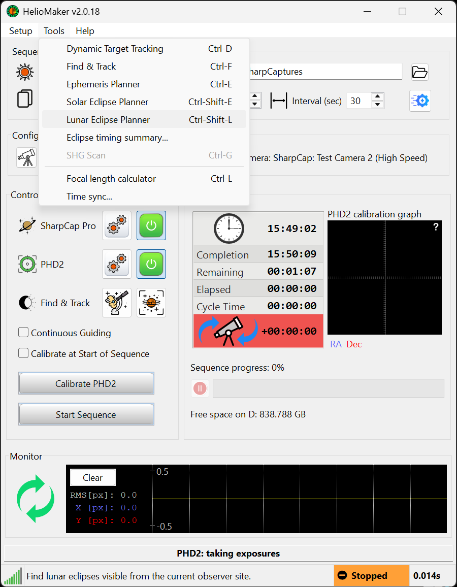

Quick start
The whole lunar eclipse workflow, from choosing an event to checking the saved images.
- Set your site. Open Dynamic Target Tracking and check the observer coordinates, elevation and time zone. Choose the site where you will image.
- Open the lunar planner. Use Tools ▸ Lunar Eclipse Planner or
Ctrl+Shift+L. - Find and select the eclipse. Set Window:, click Find lunar eclipses, then inspect the contacts and Moon visibility. A past event is suitable for rehearsal.
- Set the imaging plan. Open Plan preferences.... Enter your full-Moon reference and gain, choose the guiding camera arrangement, HDR capture mode, cadence and file settings. Review the brightness model and exposure ceiling.
- Review each phase. Inspect its adaptive exposure range, bracket, interval and guiding. Save your work with Save as draft.
- Test the camera and focus. Run System benchmark test... with the intended configuration. Establish focus and practise lunar tracking and guiding with the physical rig.
- Rehearse. Click Eclipse plan rehearsal.... Start with the internal simulator, then exercise the SharpCap camera and guiding at realistic timing. Inspect the output.
- Approve the plan. After reviewing and rehearsing the settings, use Save as final. Recheck the final version in preflight.
- On eclipse night, complete preflight. Click Start eclipse imaging. Verify the selected event, site and real clock; apply camera settings, prepare tracking and guiding, verify focus and exposure, and review every checklist item.
- Start and monitor. Start the run from preflight. Watch capture progress and alerts in the console; open the capture folder and check saved images.

Continue with Prepare in advance for the full checklist, or Planner basics for the controls.